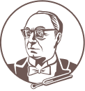
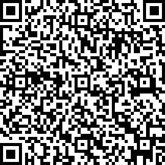

I Всероссийский конкурс исполнителей на духовых и ударных инструментах имени Анатолия Сергеевича Демина
Условия и порядок участия в I Всероссийском конкурсе исполнителей на духовых и ударных инструментах имени Анатолия Сергеевича Демина
1.1. Полное официальное название конкурса — Первый Международный конкурс хоровых дирижёров имени Александра Васильевича Свешникова (далее — «Международный конкурс»).
1.2. Учредителем и Организатором Международного конкурса является Культурный Фонд отечественного искусства «Классика XXI» (далее – Фонд).
1.3. Даты проведения Международного конкурса: 1 июня — 27 ноября 2024 года (заочный этап — с 1 июня по 20 октября; очные этапы — с 23 по 27 ноября).
1.4. В Международном конкурсе могут принять участие молодые дирижеры-хормейстеры из всех стран.
1.5. Место проведения Международного конкурса: Российская Федерация, город Сочи.
1.6. Рабочие языки Международного конкурса — русский, английский.
2.1. В Международном конкурсе могут принять участие:
2.1.1. Категория «I» – учащиеся средних специальных учебных заведений (далее – конкурсант), обучающиеся по программам среднего профессионального образования по специальности «Хоровое дирижирование»;
2.1.2. Категория «II» – студенты высших учебных заведений (далее – конкурсант). Уровни образования – бакалавриат, специалитет, магистратура, ассистентура-стажировка; хоровые дирижеры — выпускники высших учебных заведений в возрасте до 30 лет включительно.
2.2. Международный конкурс состоит из четырех туров. Первый тур – заочный, проводится по видеозаписям; второй и последующие туры – очные, проводятся публично.
2.2.1. В первом туре (по видеозаписям) каждый конкурсант представляет дирижирование двух произведений для хора без сопровождения.
2.2.2. Второй тур разделен на два этапа. В первом этапе конкурсант исполняет на рояле хоровую партитуру, выбранную им из предложенного списка и ранее подготовленную. Во втором этапе тура конкурсант проводит открытую репетицию одного произведения для хора без сопровождения, выбранного им из предложенного списка по результатам жеребьёвки. Публичная репетиция каждого конкурсанта во втором туре длится не более 15 минут.
2.2.3. В третьем туре конкурсант проводит открытую репетицию одного произведения для хора без сопровождения, выбранного им из предложенного списка по результатам жеребьёвки. Публичная репетиция конкурсантов категории «I» в третьем туре длится до 15 минут, категории «II» — до 20 минут.
2.2.4. В четвертом туре конкурсант исполняет с коллективом сочинение, над которым проводил открытую репетицию в третьем туре. Четвертый тур проходит в концертом зале в присутствии зрителей.
2.3. К участию в Конкурсе допускаются кандидаты, подавшие полный комплект документов.
2.4. К участию во втором туре допускаются не более 36 конкурсантов, получивших наиболее высокие баллы по результатам первого (заочного) тура. К участию в третьем туре допускаются не более 16 конкурсантов, получивших наиболее высокий балл по результатам второго тура. К участию в четвертом туре допускаются не более 10 конкурсантов, получивших наиболее высокий балл по результатам третьего тура.
2.5. По единогласному решению Жюри, согласованному с Оргкомитетом, количество участников в каждом туре может быть увеличено.
3.1. Порядок выступлений во всех турах устанавливается по результатам первой жеребьёвки и сохраняется неизменным, с пропуском порядковых номеров выбывших участников, вплоть до окончания Международного конкурса.
3.2. Участники первого тура, не прошедшие во второй тур, награждаются грамотами Международного конкурса.
3.3. Дирекция конкурса приглашает участников, прошедших во второй тур, для участия в очных турах официальным письмом.
3.4. Участников, непрошедших во второй тур, дирекция конкурса извещает официальным письмом о завершении участия в конкурсе.
3.5. Участники второго тура, не прошедшие в третий тур, награждаются дипломами Международного конкурса.
3.6. Участники третьего тура, не прошедшие в четвертый тур, награждаются дипломами Международного конкурса и званием «Дипломант Международного конкурса II, III степени».
3.7. Дирекция конкурса обеспечивает работу академических хоров для всех участников конкурса на всех очных турах.
3.8. Итоги прослушиваний выступлений конкурсантов с рейтинговым баллом объявляются по окончании каждого тура представителем организационного комитета.
3.9. По окончании Международного конкурса проводятся церемония награждения лауреатов и Гала-концерт (далее — «Гала-концерт»). Время и место проведения Гала-концерта устанавливаются Оргкомитетом и публикуются на официальном сайте Фонда в разделе «Международный конкурс хоровых дирижеров имени А.В. Свешникова» и в официальном сообществе социальной сети «ВКонтакте».
4.1. Заявка на участие в Международном конкурсе (далее — заявка) подается кандидатом (далее — кандидат) с 1 июня до 25 октября 2024 года для иностранных участников, с 1 июня до 25 октября 2024 года для российских участников в разделе «Заявка» на официальном сайте конкурса www.музыкальныйфестиваль-россия.рф (далее — официальный сайт). Заявка должна быть заполнена на русском или английском языке по форме, представленной на официальном сайте. К заявке прилагаются следующие документы и материалы:
4.1.1. копия документа, удостоверяющего личность (паспорт гражданина Российской Федерации — для граждан Российской Федерации, паспорт иностранного гражданина либо иной документ, установленный федеральным законом или признаваемый в соответствии с международным договором Российской Федерации в качестве документа, удостоверяющего личность иностранного гражданина, — для иностранных граждан);
4.1.2. документ об образовании (справка из учебного отдела или отдела аспирантуры/диплом);
4.1.3. творческая биография (резюме) не более 1000 знаков;
4.1.4. для учащихся и студентов – рекомендательное письмо от педагога. Письмо должно быть написано в виде специальной рекомендации кандидата к участию в конкурсе на русском или английском языке.
4.1.5. две цветные фотографии кандидата в цифровом формате с разрешением не менее 300 dpi, включая фотографию крупным планом, подходящую для размещения в буклете и на официальном сайте;
4.1.6. ссылка на видеозапись. Требования к видеозаписи: видеозапись должна быть сделана не ранее, чем в мае 2024 года, строго на одной площадке, снята с одного места на одну неподвижную камеру без перерывов в ходе исполнения одного произведения и отображать кандидата в полный рост, без редактирования. Видеозапись должна быть представлена в виде web-ссылки (конкурсанты самостоятельно несут ответственность за работоспособность web-ссылок). Выключение камеры между сочинениями не допускается. Исполняемые произведения на видеозаписи должны соответствовать программным требованиям I тура. Качество видеозаписи – HD (разрешение не менее 1280×720). В описании к видео должна быть указана программа;
4.1.7. квитанция с отметкой банка об оплате вступительного взноса.
5.1. Организационный взнос (далее – взнос) для участников Международного конкурса составляет 2 500, 00 (две тысячи пятьсот) рублей. Взнос оплачивается до подачи пакета документов банковским переводом по следующим реквизитам:
Наименование: КФ ОТЕЧЕСТВЕННОГО ИСКУССТВА «КЛАССИКА XXI»
ИНН: 2373022184
КПП: 237301001
ОГРН: 1222300053865
Расчётный счёт: 40703810730000001006
Наименование: КРАСНОДАРСКОЕ ОТДЕЛЕНИЕ N8619 ПАО СБЕРБАНК
БИК: 040349602
Корсчёт: 30101810100000000602
ИНН: 7707083893
КПП: 231043001
Назначение платежа: Ф.И.О. кандидата/пожертвование — Sveshnikov.
Пример: Иванов Иван Иванович/пожертвование – Sveshnikov.
e-mail: sveshnikovcompetition@festival-mgmoskva.ru
тел. +7 000 000 00 00

5.2. Конкурсанты, получившие приглашение для участия во II туре конкурса и проживающие в стране, имеющей визовый режим с Российской Федерацией, должны самостоятельно обратиться в консульство Российской Федерации для оформления визы. Дирекция конкурса обязуется предоставить все необходимые приглашения, но не несет ответственности за получение визы и связанные с этим затраты.
6.1. Категория «I»:
Гран-При — 300 000 рублей;
1-я премия — 100 000 рублей, звание Лауреата I степени и золотая медаль;
2-я премия — 80 000 рублей, звание Лауреата II степени и серебряная медаль;
3-я премия — 70 000 рублей, звание Лауреата III степени и бронзовая медаль;
4-я премия — 40 000 рублей, звание Дипломанта I степени.
Специальная премия «За убедительное исполнение хорового сочинения на рояле» —
15 000 рублей и диплом;
Специальная премия «За художественное воплощение обработки народной песни Александра Васильевича Свешникова» — 15 000 рублей и диплом;
Специальная премия «Творческое признание от хорового коллектива» — 5 000 рублей и диплом.6.2. Категория «II»:
Гран-При — 500 000 рублей;
1-я премия — 120 000 рублей, звание Лауреата I степени и золотая медаль;
2-я премия — 100 000 рублей, звание Лауреата II степени и серебряная медаль;
3-я премия — 90 000 рублей, звание Лауреата III степени и бронзовая медаль;
4-я премия — 60 000 рублей, звание Дипломанта I степени.
Специальная премия «За убедительное исполнение хорового сочинения на рояле» —
15 000 рублей и диплом;
Специальная премия «За художественное воплощение обработки народной песни Александра Васильевича Свешникова» — 15 000 рублей и диплом;
Специальная премия «Творческое признание от хорового коллектива» — 5 000 рублей и диплом.
6.3. Специальные призы — выступления в 2024—2025, 2025−2026 сезонах в качестве дирижера с ведущими хоровыми коллективами Российской Федерации.
6.4. Премии выплачиваются в рублях по официальному курсу, установленному Центральным банком Российской Федерации на день выплаты, путем перечисления на банковский счет конкурсанта в течении 15 рабочих дней.
6.5. В зависимости от достигнутых результатов и в пределах установленного количества премий жюри конкурса имеет право:
6.5.1. присудить не все премии;
6.5.2. делить премии между конкурсантами.
6.6. Решения жюри конкурса окончательны и пересмотру не подлежат.
Специальная премия «Творческое признание от хорового коллектива» — 5 000 рублей и диплом.По согласованию с организационным комитетом возможно учреждение специальных и дополнительных премий другими государственными, коммерческими, общественными или творческими организациями как российскими, так и зарубежными. Такие премии должны быть согласованы с организационным комитетом не позднее даты начала конкурса.
7.1. Конкурсантам, приглашенным на II тур конкурса предоставляется проживание и питание в гостинице (двухместное размещение не ниже категории «четыре звезды») с даты, указанной в приглашении, и до даты окончания конкурсантами участия в конкурсе.
7.2. Финалисты конкурса на безвозмездной основе принимают участие в гала-концерте конкурса.
7.3. Все туры конкурса могут транслироваться в прямом эфире на официальный сайт, в сообщества социальных сетей, телевизионных передачах и записываться для последующих трансляций и изданий на аудио- и видеоносителях. Конкурс будет доступен для просмотра в информационно-телекоммуникационной сети «Интернет».
7.4. Дирекция конкурса обладает исключительными правами на трансляцию, аудио- и видеозаписи конкурса и заключительного концерта лауреатов, а также на дальнейшее использование указанных материалов.
7.5. Отправляя заявку на участие в Международном конкурсе, конкурсант подтверждает согласие на использование дирекцией конкурса материалов, указанных в пункте 7.3 Положения. Дирекция конкурса не несет финансовых обязательств перед конкурсантами за использование полученных материалов.
7.6. Дирекция конкурса не обеспечивает конкурсантов и сопровождающих их лиц какими-либо видами страхования.
7.7. Заявка является свидетельством того, что участник конкурса полностью принимает и обязуется выполнять условия, изложенные в настоящем Положении.
7.8. Жюри конкурса формируется из числа видных деятелей мировой музыкальной культуры и утверждается художественным советом.;
7.9. Жюри конкурса в своей работе руководствуется положением о жюри конкурса, утверждаемым организационным комитетом.
7.10. Члены жюри оценивают выступления участников по четырем критериям. Выступление каждого конкурсанта оценивается по 100-бальной шкале. Максимальное количество баллов по каждому критерию — 25.7.11. Баллы участников публикуются по окончании каждого тура в итоговом протоколе.
7.12. Вся информация, размещенная на официальном сайте, является корректной на момент публикации. В случае возникновения разногласий в прочтении текстов и условий между русскоязычной и англоязычной версиями предпочтение отдается русскоязычной версии.
7.13. Все участники, получившие официальное приглашение для участия во II туре, обязаны принять участие в регистрации и жеребьевке согласно утвержденному Графику проведения Конкурса. Неявка на регистрацию и жеребьевку Международного конкурса может послужить отказом для участия в конкурсе.
7.14. Отказ от участия после получения официального приглашения принимается только в письменном виде на официальную почту конкурса sveshnikovcompetition@festival-mgmoskva.ru. Последующий отзыв отказа от участия невозможен.
7.15. В случае если участник прошел видео-отбор и получил официальное приглашение для участия во II туре конкурса и в последствии прислал официальный отказ от участия, то по решению Председателя жюри может быть инициировано голосование о допуске к участию во II туре участника, который оказался первым «под чертой» среди участников, непрошедших во II тур. Данное решение принимается членами жюри простым большинством голосов.
7.16. Замена в порядке жеребьёвки допускается только по уважительным причинам с разрешения Дирекции Международного конкурса и на основании письменных заявлений от участников Конкурса.
Категория «I»:
8.1 I тур.
Каждый конкурсант представляет дирижирование под аккомпанемент фортепиано двух произведений для хора без сопровождения: первое произведение — из сочинений композиторов второй половины XIX, XX столетий (по выбору участника); второе произведение – народная песня в обработке А.В. Свешникова (также по выбору участника).
8.2 II тур.
Второй тур состоит из двух этапов:
8.2.1. игра партитуры наизусть по выбору участника из предложенного списка:
Сергей Танеев, «Звезды», стихи А. Хомякова, соч.15, из цикла 2 хора a cappella
Виссарион Шебалин, стихи Максима Танка в переводе Михаила Исаковского, «Мать послала к сыну думы»
Морис Равель, «Николетта», из цикла «Три песни для хора a cappella»
8.2.2. открытая репетиция с хором студентов Казанской государственной консерватории имени Н.Г. Жиганова.
Список произведений для работы с хором (обработки народных песен А.В. Свешникова):
Специальная премия «За художественное воплощение обработки народной песни Александра Васильевича Свешникова» — 15 000 рублей и диплом;
Специальная премия «Творческое признание от хорового коллектива» — 5 000 рублей и диплом.6.2. Категория «II»:
Гран-При — 500 000 рублей;
1-я премия — 120 000 рублей, звание Лауреата I степени и золотая медаль;
2-я премия — 100 000 рублей, звание Лауреата II степени и серебряная медаль;
3-я премия — 90 000 рублей, звание Лауреата III степени и бронзовая медаль;
4-я премия — 60 000 рублей, звание Дипломанта I степени.
Специальная премия «За убедительное исполнение хорового сочинения на рояле» —
15 000 рублей и диплом;
Специальная премия «За художественное воплощение обработки народной песни Александра Васильевича Свешникова» — 15 000 рублей и диплом;
Специальная премия «Творческое признание от хорового коллектива» — 5 000 рублей и диплом.
6.3. Специальные призы — выступления в 2024—2025, 2025−2026 сезонах в качестве дирижера с ведущими хоровыми коллективами Российской Федерации.
6.4. Премии выплачиваются в рублях по официальному курсу, установленному Центральным банком Российской Федерации на день выплаты, путем перечисления на банковский счет конкурсанта в течении 15 рабочих дней.
6.5. В зависимости от достигнутых результатов и в пределах установленного количества премий жюри конкурса имеет право:
6.5.1. присудить не все премии;
6.5.2. делить премии между конкурсантами.
6.6. Решения жюри конкурса окончательны и пересмотру не подлежат.
Специальная премия «Творческое признание от хорового коллектива» — 5 000 рублей и диплом.По согласованию с организационным комитетом возможно учреждение специальных и дополнительных премий другими государственными, коммерческими, общественными или творческими организациями как российскими, так и зарубежными. Такие премии должны быть согласованы с организационным комитетом не позднее даты начала конкурса.